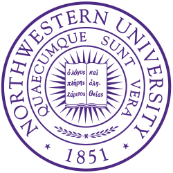

About Me
I am Wenchang Wang, currently a master's student at Peking University, majoring in Journalism and Communication with a minor in Economics. I will start my Ph.D. in Media, Technology, and Society (MTS) at Northwestern University in Fall 2026, where I will work with Associate Professor Emoke-Agnes Horvat.
My research focuses on political communication, primarily using computational methods to study political phenomena in online communities. My specific research interests include:
- User behavior following platform policy changes
- Off-topic discussion phenomena and causes in online communities
- Advanced multimodal data analysis and processing methods
My research centers on computational social science and causal inference, with a goal of bridging classic communication theories and modern computational approaches in digital environments. My papers have been accepted at conferences including ICA, NCA, AEJMC, and IC²S². My work has received recognition including the Top Student Paper at AEJMC, the Promising Student Paper at ICA, and the Best Faculty Paper Award (ICCA Division) at the ICA 76th Annual Conference in 2026.
Latest Updates
Education
